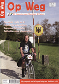

|
 Verschenen in Op Weg 1/2007 pagina 52 door Ignace Fermont |
||
|
Joris Van den Bergh (www.hutten.be): |
||
|
"Als de bezoekers van mijn website zin krijgen hun bergschoenen aan te trekken, dan heb ik mijn doel bereikt", aldus Joris Van den Bergh, de man achter de website 'Berghutten in Europa' of www.hutten.be. Een gesprek. |
||
|
een groot deel van de Zwitserse Alpen gezien en had ik foto's en een korte beschrijving van een zestigtal hutten. Ik wilde iets met al dat materiaal doen en besloot eind 2001 er een website van te maken." |
||
|
|
||
|
Hoeveel tijd spendeer je per week aan de website? Zijn er grote verschillen tussen de verschillende Alpenlanden?
Joris Van den Bergh: "De hutten in Oostenrijk en in Zuid-Tirol zijn vaak groot, sommige lijken wel hotels met tweehonderd slaapplaatsen in twee- en vierpersoonskamers. Die waren oorspronkelijk gebouwd als soldatenonderkomens tijdens de eerste wereldoorlog. Zwitserse hutten zijn doorgaans kleiner, met plaats voor dertig tot zestig personen. Het is er ook rustiger. Vaak kun je er het hele jaar binnen, ook als ze niet bemand zijn. Er hangt een prijslijst en je kunt zelf drank nemen en geld achterlaten voor wat je verbruikt. In Oostenrijk heb je dat minder."
Kan je ons een paar hutten of streken aanraden?
Joris Van den Bergh: "De Gspaltenhornhut in het
Berner Oberland is een heel authentieke. Met zijn muren vol oude foto's lijkt
het wel een museum. Je moet je buiten wassen en als je naar de wc gaat, hang je
letterlijk boven een afgrond. De weg er naartoe door het Kiental is bijzonder
mooi. In dezelfde buurt ligt de mooie Blümlisalphütte. Te bereiken via een
prachtige route vanuit Kandersteg o.a. langs de Oeschinensee. Ach, eigenlijk
maakt het niet uit naar welke hut je gaat. Elke hut die je bereikt is een
beloning, ook al moet je soms jezelf overwinnen om er te geraken."
Joris Van den Bergh: "Wandelen in de bergen is een
les in nederigheid en een ideale manier om te ontstressen. Soms beleef je
onvergetelijke momenten. Zoals die avond laat in het jaar bij de Tschiervahut.
We zaten buiten op het terras. De ondergaande zon kleurde de besneeuwde
bergflanken oranje. Plots daalde een grote troep gemzen af naar een smalle
strook gras vlakbij de hut. Daar word je stil van. Iedereen zou zoiets een keer
moeten meemaken." |
||
|
|
||